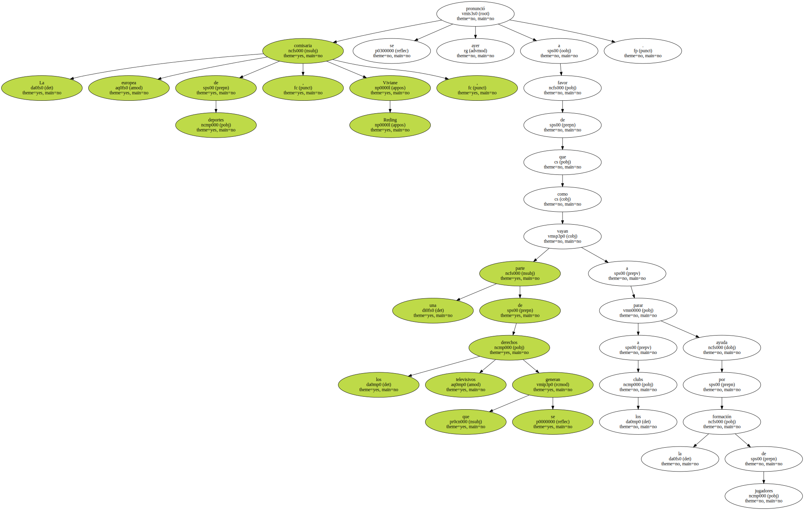
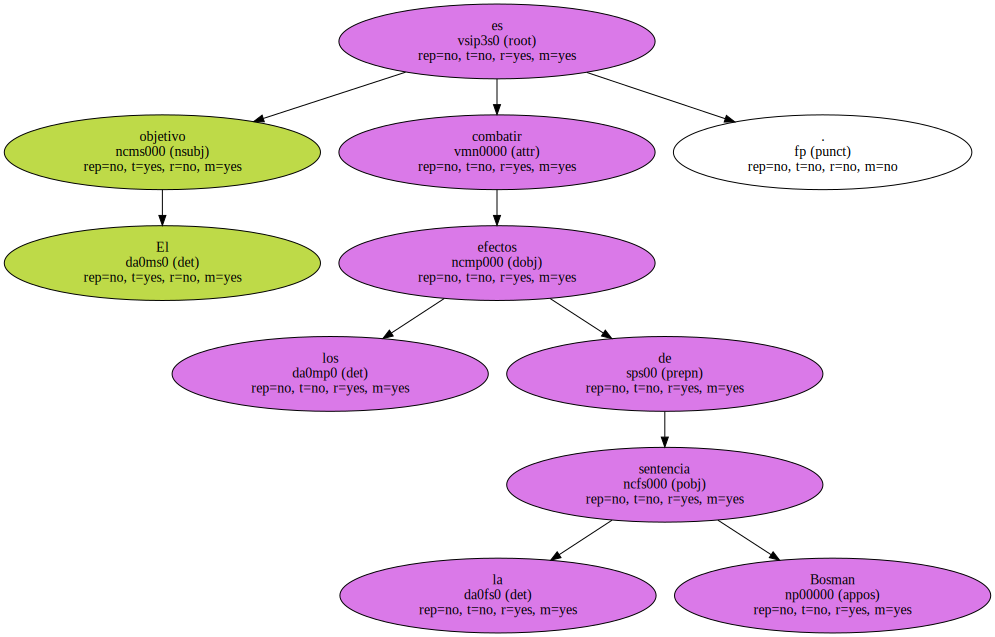

La Comisión Europea quiere potenciar la formación de jugadores.

La comisaria europea de deportes , Viviane Reding , se pronunció ayer a favor de que una parte de los derechos televisivos que se generan vayan a parar a los clubs como ayuda por la formación de jugadores.
El objetivo es combatir los efectos de la sentencia Bosman.
